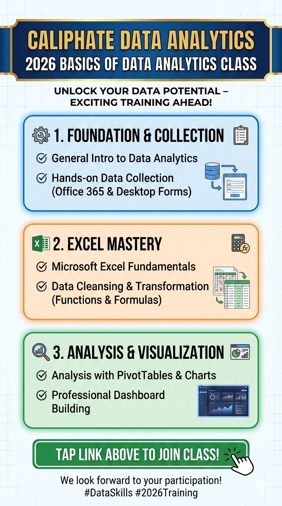
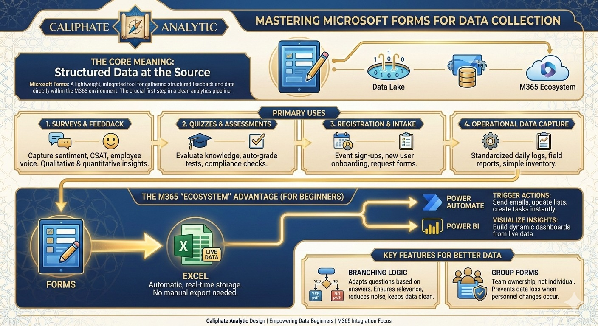

Turn Data Into Strategic Power.
Professional data analytics, dashboards, survey analytics, AI solutions and practical training for individuals, teams and organisations.
Explore the Sample Sales Dashboard →
What We Do
Data Analytics
Cleaning, descriptive analysis, diagnostics, trends and actionable insight.
Business Intelligence
Interactive dashboards, KPIs and management reporting using Excel and Power BI.
Survey Analytics
PMI, BES, cross-tabs, diffusion indices, text analytics and reporting.
AI Solutions
AI-assisted analysis, automation, forecasting and intelligent assistants.
Training
Hands-on Excel, Power BI, SQL, Python, data literacy and dashboard training.
Training & Resources
Practical resources covering analytics lifecycle, data collection, Excel cleansing and performance dashboards.

Data Analytics Training
Foundation and practical analytics learning.

Digital Data Collection
Microsoft Forms and structured collection workflows.

Excel Data Cleansing
Functions and tools for cleaner analytical data.
Sample Dashboard
Use the supplied 838-record demonstration dataset or download the template, enter your own records and re-upload for analysis.
Open Dashboard